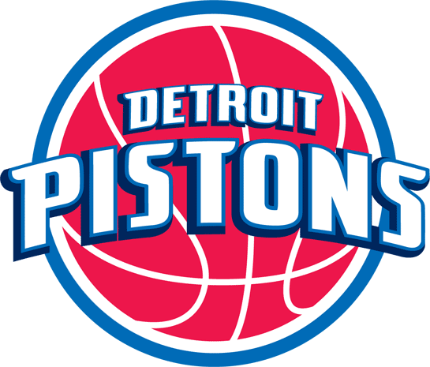

Boston Celtics 
Led by Hall of Famers Elgin Baylor and Jerry West, Los Angeles made the NBA Finals six times in the 1960s, but lost each series to the Celtics, beginning their long and storied rivalry.The rivalry between the Boston Celtics and the Lakers involves the two most storied basketball franchises in National Basketball Association (NBA) history. It has been called the best rivalry in the NBA.The two teams have met a record 12 times in the NBA Finals, starting with their first Finals meeting in 1959. They would go on to dominate the league in the 1960s and the 1980s, facing each other six times in the 1960s and three times in the 1980s.
The rivalry had been less intense since the retirements of Magic Johnson and Larry Bird in the early 1990s, but in 2008 it was renewed as the Celtics and Lakers met in the Finals for the first time since 1987, with the Celtics winning the series 4–2. They faced off once again in the 2010 NBA Finals, which the Lakers won in 7 games.

Detroit Pistons 
The rivalry between the Lakers and the Detroit Pistons developed in the late 1980s. Both teams faced each other in back-to-back finals appearances in the 1988 NBA Finals, which the Lakers won in 7 games and the 1989 NBA Finals, which the Pistons won in 4 games.
The rivalry reemerged in the early 2000s as both teams squared off against one another in the 2004 NBA Finals, which the Pistons won in five games.

San Antonio Spurs
The San Antonio Spurs and the Lakers, developed what some would classify as a rivalry in the late 1990s and early 2000s. Since 1999, the teams have met in the NBA Playoffs five times, with the clubs combining to appear in seven consecutive NBA Finals (from 1999 to 2005).
Additionally, the teams combined to win five NBA championships from 1999 to 2003; the Spurs won the NBA championship in 1999, 2003, 2005, 2007 and 2014 while the Lakers won the championship in 2000, 2001, 2002, 2009 and 2010. From 1999 to 2004 the clubs' rivalry was often considered the premier rivalry in the NBA, and each time the clubs faced each other in the playoffs the winner advanced to the NBA Finals. In 2008, the teams met again in the Western Conference Finals where the Spurs were handily defeated only to beat the Lakers when they met again in 2013.